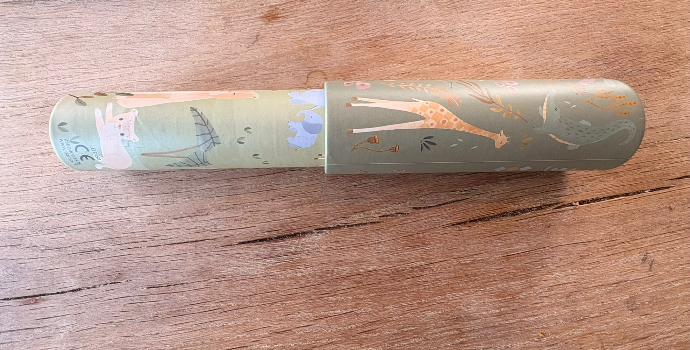
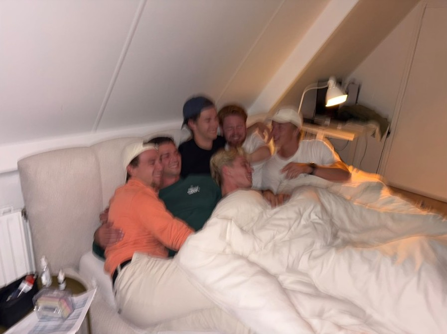

Finding North.
Hielke Gase

I decide to look through someone else’s kaleidoscope before I lead them.
How to read this portfolio
This portfolio follows the order of the minor: chapter 1, 2, 3 and 4. Inside each piece I use the compass. You enter where it is hardest and leave by North, because something has to be decided.
About this portfolio.
I am Hielke Gase, a second-year HRM student from Warns. I work as a shift supervisor at Plus Stavoren and I coach a youth football team. I came to this minor to learn how to manage people well, how to respect cultures and how to help people get the most out of themselves (see 1.3). This minor made me think a lot about why I do what I do. Some assignments, like the serious games, felt strange while we were doing them. Only when I started to reflect did I understand them. The compass gave that reflection a shape: in every piece I start where it is hardest and end at North, with what I have decided. My North is that I look through someone else’s kaleidoscope before I lead them.
Point Meaning Question it asks
East
The situation
What does this situation actually ask of me?
West
Wisdom
What do I know, and who or what did I learn it from?
South
Self-knowledge
Who am I when I act, and what do I tend to avoid?
North
What now?
What have I decided, and what will I do about it?
| No. | Piece | Read by | Status |
|---|---|---|---|
| 1.1 | The Moral Compass portfolio | Christine Fenech | Draft |
| 1.2 | Your personal pitch | Michiel Galama & Harmannus Huizenga | Draft |
| 1.3 | Your learning question | Michiel Galama & Harmannus Huizenga | Draft |
| 1.4 | Reflection on the serious games | Michiel Galama & Harmannus Huizenga | Draft |
| 1.5 | Your 80,000 hours | Michiel Galama & Harmannus Huizenga | Draft, sources to check |
| 2.1 to 2.3 | Research project, reflection and poster | Jacqueline Rietveld & Folkert de Jong | 2.2 draft; 2.1 and 2.3 group work, added separately |
| 3.1 | Film night | Michiel Galama & Harmannus Huizenga | Draft |
| 3.2 | The crossing, or Alternative organisation | Michiel Galama & Harmannus Huizenga | Draft |
| 3.3 | The exhibition in the church | Christine Fenech | Not in the portfolio |
| 4 | Reflections on the learning outcomes | Michiel Galama & Harmannus Huizenga | To do |
| Choice | Four choice assignments | to check | To do |
Hand-in Sunday 1 November 2026. Exhibition Monday 2 and Tuesday 3 November 2026.
Chapter 1
Who I am
Five pieces turned inward: the compass applied to myself.
In this chapter I look at myself. My five stories show where my way of leading comes from: Warns, my family, my old coach Daniel, my time as a ski instructor in Austria and a difficult year in Groningen (1.1). Along the way, my view of a good leader changed. At the start, I admired a leader like Daniel, who is confident and decides alone. Now I want to ask first, then decide and explain why. My pitch (1.2), my learning question (1.3), the serious games (1.4) and my 80,000 hours (1.5) each show a part of that change.
1.1
The Moral Compass portfolio
1.1.1 The five stories.
My five stories come from the storytelling sessions. East: Genius Loci and Family Shield. West: Mentorship and Call to Adventure. South: Crisis.
Story 1
Genius Loci, Warns
I am from Warns, a small village with a lot of farmers and farmland. It lies close to the water, and in summer it gets busy with people on boats. It is a place where everyone knows everyone. Social cohesion is high and news travels fast. People make small talk and check in on each other. The clearest example is the village festival. You see so many different people there. Not everyone literally knows each other, but you can walk around for a whole day and still not have talked to everyone you know. That is when you really notice how strong the social cohesion is.

Note. Own photo.
Warns is also a proud village. People are proud of QVC, our football club, where I play myself and which works together with Stavoren, proud of being farmers, even those who are not, like me, and proud of our own language, Frisian. I think this shaped me. I am a social person, I talk easily with people, and I like to think I am approachable.
Warns is also the world I now lead in. I work as a shift supervisor at Plus Stavoren, close to Warns, and I play and coach at QVC. That is not always easy. Giving instructions to my friends at the Plus sometimes feels like asking a lot. And some boys who play at QVC and work under me at the Plus do not always take me seriously. When that happens, I usually laugh along with them for a moment, but I still remind them that the work has to be done. Often I also explain what I am going to do.
Why on East
This story belongs on East because it describes the place I was given, not the place I chose. Warns is the social environment that shaped how I deal with people, and it is still the environment I lead in, where people know each other inside and outside work.
Story 2
Family Shield
I grew up with my twin brother, my younger brother and my parents. We moved to Warns when I was two, so it is the only place I really remember as home. At home, three sentences came back again and again. “If you get stuck, I always want to help you.” “Don’t talk nonsense, always tell the truth.” “Be kind to each other.” Helping, honesty and kindness are the values on my family shield.
The shield also has a shadow side. I hardly knew my father’s side of the family, apart from my aunt. My father had a bad relationship with his parents, so that part of the family was mostly missing from my childhood. Luckily, it did not affect me much. My father was always open about it. He did not get along with his father, so we hardly ever saw him. Sometimes I found that a pity, because I was curious what my grandparents on that side were like. Looking back, my father’s openness is the value “always tell the truth” in practice.
I would not change the values on the shield, because I still stand behind all three. What I would add is my own motto: family is the most important thing you have, so cherish it. Maybe that comes exactly from the side of the family I missed.
Why on East
This story belongs on East because my family was the first environment I grew up in, and these values were given to me before I could choose them. It is also still the environment I fall back on. When I doubted going to Austria and when things went wrong in Groningen, it was my family that was there (see Stories 4 and 5).
Story 3
Mentorship, Daniel
Daniel Ybema was my coach and trainer in the under 17 and under 19. He stood in front of the group with confidence, explained things clearly and always knew what he wanted. One day the head coach wanted to take some of our players to the first team. Daniel asked if they would start in the first eleven. The answer was no. So Daniel made sure those players first got playing minutes in our team. It did not matter to him who he was dealing with. He stood up for his team.
The wisdom he passed on was that a leader fights for his people. What sometimes got in the way was that Daniel went too far. He fought for his team with so much passion that he sometimes lost his head. Looking back, he also decided for the players without asking what they wanted, and explained his reasons afterwards. I still admire how clear and confident he was. But today I would first ask the players, and then decide.
Why on West
This story belongs on West because Daniel passed on wisdom about leading: a leader fights for his people. Over time I also tested that wisdom against my own view, and today I would add one step, asking first.
Story 4
Call to Adventure, ski instructor in Austria
Three years ago I went to Austria to work as a ski instructor. It was scary. I came to a country with a language I did not speak well, people I did not know, and very little information beforehand. What made me go was something my mother said: “You are thinking about everything that could go wrong. But what if everything goes right? What if you have the time of your life there?”
To come
Paste the two lines about falling and flying here yourself, followed by (Hanson, n.d.).
The resource inside me was trust, trust in my mother that she would be right. That fits the motto on my family shield: family is the most important thing you have. And she was right. I had the time of my life. I started a week with children who had never skied, and by the end of the week I skied with them in the big ski area. In my group was a boy who could not ski at all and was scared, of the slope and of the lift. He only wanted to go with me. First I asked him why he was scared. Then I explained once more how it worked, showed him that the other children could do it too, and told him I was sitting right behind him, so nothing could happen. He went. At the top of the lift he stood there shouting with joy: “Meester, ik deed het gewoon helemaal alleen!” (Sir, I did it completely on my own!) That is a moment I will never forget. That is where I found out that I get energy from seeing people grow.

Note. Own photo.
Why on West
This story belongs on West because the wisdom came from my mother: look at what can go right, not only at what can go wrong.
Story 5
Crisis, Groningen
Before this study, I studied at the ALO, the physical education teacher programme, in Groningen. I moved into a student room. At first it was fun, with a lot to do and discover. But I noticed that I was often alone in my room. That did not work for me, because I need social contact. I ended up in a downward spiral. I never really talked to anyone about it, until it became too much. I remember sitting at the table at home when my mother came in. She asked how I was doing, and I just broke. I then decided to stop the study and move back to Warns, back to my friends and everything I wanted.
Since then I have lived in Warns again. I know that everything I want is here, and I will not need to leave again. What I take most from that period is that friends are among the most important people in your life. I do not talk about it much anymore, because for me it is a closed chapter, and that is good.
Why on South
This story belongs on South because it showed me who I am: someone who needs people around him, and someone who did not talk about it when things went wrong. It also belongs partly on West, because the lesson that friends are among the most important people in your life is wisdom I gained through this experience.
1.1.2
My view of leadership, three times over
View 1. Start of the minor.
In my notes from the first lesson, I wrote that I wanted to find out what kind of leader I am, and how I can help people get the most out of themselves. The leader I would follow was someone who is confident, knows what they are doing and has experience in the subject. That looks a lot like my old coach Daniel (see Story 3). I saw myself as a leader who leads by example and keeps oversight. What I needed to develop was standing in front of a group of people I do not know well, with confidence.
View 2. During the minor.
To be honest, I did not stop to look at my view of leadership halfway through the minor. But during the film night, something did shift. We watched The Big Short, and I saw Michael Burry as a leader of the previous generation. He was confident and he was right, but I did not see him explain to the people around him why he did what he did. That made me see that confidence and knowing what you are doing, my picture of a good leader at the start, are not enough. A leader also has to be able to explain his choices.
View 3. Now, at the end of this block.
Now, a good leader for me first looks through someone else’s kaleidoscope. I ask what someone finds important or thinks they are good at, I look for myself, and then I decide and explain why. I saw how this works with a new boy in my football team. I asked him where he liked to play, saw in the warm-up that midfield fitted him better, explained it to him, and he gave two assists. I kept something from Daniel and from my first view: a leader still has to be confident and make decisions. But I now add two steps, asking first and explaining afterwards. I also learned that this counts for myself. When others know more than I do, I have to ask them, instead of trying to do everything myself. As for standing in front of people I do not know well, at the film night I was with three people I did not know, and we clicked from the first moment. The soapbox at the exhibition will be the real test.
1.1.3
The North artefact

Note. The idea of using a kaleidoscope came from a teacher. The card and the decision were developed with AI as a thinking partner.
The text that explains it.
My North artefact is a kaleidoscope with a card next to it: “Look through it. What do you see? Now ask the person next to you.” No two people see the same image. For me, this stands for what people find important. Everyone looks at work and life through their own kaleidoscope and sees something different. My stories show where this comes from. In Warns (Story 1), people check in on each other, and it is still the place where I lead people I also know outside work. My family (Story 2) taught me to help, to be honest and to be kind. Daniel (Story 3) showed me that a leader fights for his people, but he decided without asking them. My mother (Story 4) looked at my fears and asked what would happen if everything went right, and in Austria I found out that I get energy from seeing people grow. In Groningen (Story 5), what made the difference was my mother asking how I was doing. The kaleidoscope reminds me that I cannot know what someone sees unless I ask.
What I have decided
I decide to look through someone else’s kaleidoscope before I lead them. At Plus Stavoren, this means I discuss a problem with my team first, before we choose a solution. With my football team, it means I ask every player what they think they are good at, before I decide their position. And when others know more than I do, I ask them.
1.1.4
Evidence and appendices
| Evidence | What it shows | Where to find it |
|---|---|---|
| Photo of the kaleidoscope with the card | My North artefact | Figure 3 |
| Statement on the use of AI | Which parts were AI suggestions and which are my own | Appendix B |
| Photo of the village festival in Warns | The social cohesion of the place I come from (Story 1) | Figure 1 |
| Photo from Austria | Where I worked as a ski instructor (Story 4) | Figure 2 |
1.2
Your personal pitch
Ask first.
The pitch in one sentence.
Next generation leaders ask first, and make sure people can do it themselves.
Script.
My view of next generation leadership, about three and a half minutes, built around two moments: what I used to think a leader was, and where I found out what kind of leader I want to be. The content is mine; I will say it in my own words on the soapbox.
Opening, 30 seconds.
Who here has ever had a leader who decided everything for you? I did. And for a long time, I thought that was what a good leader looked like.
West, what I used to think, 1 minute.
My youth football coach, Daniel, was confident and clear, and he always knew what he wanted. Once, the head coach wanted to take some of our players to the first team, without letting them start. Daniel stood up for them and kept them with us. I admired him for that. But he decided everything for us. Afterwards he explained why, and then I usually understood. Still, I often did not like it. I would have liked it so much more if he had just asked us.
South, where I found out, 1.5 minutes.
Three years ago I went to Austria as a ski instructor. In my group was a boy who could not ski at all, and he was scared. Scared of the slope, scared of the lift. He only wanted to go with me. So I did not push him. First I asked him why he was scared. Then I explained once more how it worked, and showed him that the other children could do it too. And I told him: I am sitting right behind you, nothing can happen. He went. At the top of the lift he stood there, shouting with joy: “Meester, ik deed het gewoon helemaal alleen!” Sir, I did it completely on my own. That is a moment I will never forget. That is when I knew what kind of leader I want to be.
North, my view now, 45 seconds.
Daniel decided for us. With that boy, I did something else. I asked first. Then I explained and helped. And then I let him do it himself. I think many people feel like I did with Daniel: they understand the decision, but they want to be asked. For me, that is next generation leadership. Not the leader with all the answers, but the leader who asks first, and makes sure people can do it themselves. Thank you.
Standing by my own work.
I stand next to my North artefact, the kaleidoscope with its card. I do not explain it in the pitch, but it shows the same idea: you only know what someone else sees when you ask.
Form and slot.
Soapbox, Tuesday 3 November 2026, at 12:00.
1.3
Your learning question
From learning to doing.
My learning question, word for word:
“In this minor, I want to learn how to manage people well, how to respect cultures and help people to get the most out of themselves.”
Where it came from.
When I wrote this sentence in the first session, I wrote down the values I care about most. The clearest example comes from three years ago, when I worked as a ski instructor in Austria (see Story 4). I started the week with a group of children who had never skied before. We began on the children’s slope. I let them repeat the same exercises again and again, and when they were tired or wanted to give up, I motivated them to try one more time. By the end of the week, I skied with them in the big ski area. Seeing them grow from nothing to skiing on their own gave me energy. That is where the part about helping people get the most out of themselves comes from.
I also coach a youth football team. There I try to find out what each player is good at, defending or attacking, and put them in the position that fits. That is what I meant by managing people well: knowing your people and using them where they are strongest.
The part about respecting cultures is different. I added it because people from different cultures live and work closer together, and that matters for the next generation of leaders. But I had little experience with it myself. Looking back, that part of my question was more a gap than something I already knew.
What has happened to it since.
| Moment | What happened | What it did to my question |
|---|---|---|
| October 2026, writing this portfolio | Looking back at my question while writing my stories | Shifted from what I want to learn to how I am going to do it |
| Week 1 of the research project | Working group with many students from other cultures. Some Dutch students wanted to jump to a solution, while students from other cultures first wanted to understand the problem. I agreed with them and reminded the group to go step by step | Widened. Respecting cultures became something I did, not only a value |
To be honest, I did not work with my learning question much during the block. I wrote it in the first session and only came back to it while writing this portfolio. Still, two moments changed it. In the working group of our research project, I worked with many students from other cultures. I noticed that they first wanted to understand the problem fully, while some Dutch students wanted to jump to a solution straight away. I agreed with the first approach and reminded the group not to look for solutions yet, but to go step by step. This was the first time respecting cultures was something I did, not just something I wrote down. It also showed me that getting the most out of people can mean slowing a group down, so everyone can contribute in their own way. The second moment is now. While writing this portfolio, my question moved from what I want to learn to how I am going to do it.
Where my question stands now.
My question is not answered yet, but it has changed. When I wrote it, it was about values, what I find important in leading people. Now it is more about action. If I wrote it again today, it would be: “How can I use what I learned about managing people, respecting cultures and helping people grow in my own work at Plus Stavoren and with the youth football team I coach?”
What I know now that I did not know then is that respecting cultures is not only a value. I can use it in a group. In the working group, the students from other cultures wanted to understand the problem first, and I supported that. I also see that what I liked as a ski instructor and what I do as a coach are the same thing: helping people grow step by step.
At Plus Stavoren, I will discuss a problem with my team first, so we understand what is going wrong, before we choose a solution. This is what I did in the working group, and I want to make it a habit in my own work.
With the youth football team, I already asked a new player where he liked to play before his first match this season. He said he liked attacking, but in the warm-up I saw that he was not as fast as the other attackers. I played him in midfield and told him he could join the attack, and he gave two assists. With the players I already knew, I decided myself, based on what I had seen. But the new player showed me that what I see and what a player wants can be different. That is why, at training on Wednesday 28 October, I asked all players where they like to play and what they think they are good at. Most of them said they were good where they already played. One player wanted something else. I always put him in defence, because he kicks the ball hard and he is quite tall. He would rather play up front and score goals, because he thinks his hard kick would often go in. I explained to him why I put him in defence, and we agreed that he will play as a striker this Saturday. I still decided, but I asked first, explained why and gave him the chance to try.
I take part in the 30 EC version of the minor, so my question will keep developing in the second half.
Evidence.
Screenshot of my notes with the original learning question (Appendix A).
1.4
Reflection on the serious games
Understand the situation first.
The International Trade Game: what I did.
We played the International Trade Game in week 1 of the minor. The group was split into six teams, the “countries”. Every country got an envelope that could hold paper, pencils, scissors and rulers. You earned money by cutting shapes from the paper and selling them to the bank, at prices that went up and down. When we found out that not everyone had the same things in their envelope, our group had a lot of paper but no scissors. I went to all the other countries first. They all asked very high prices for their scissors. I went back to my group and discussed it with them. My plan was to use a pair of scissors for a set time instead of buying one, so to rent it. That became possible when we got the doubler, a token you could put on one sheet of paper to double its value. I also noticed that I wanted our country to work in a structured way. One person started making triangles from our paper, and I went with someone else to negotiate for scissors to rent.
What I would not have predicted.
I am always very enthusiastic in games like this and want to get to work straight away. I did not know the people in my group yet. Still, I first went round all the countries, discussed a plan with my group and divided the tasks, instead of just starting.
Change Journey: what I did.
In Change Journey, our team was a consultancy firm. A nursery school was in trouble, and we had to talk to all the stakeholders and then present a plan to Sod, a toddler, in three minutes and in a very simple way. Someone in our group again started thinking of solutions straight away and began working on a poster. I tried to first interview all the stakeholders, and only then come up with a solution. After every interview, that one person went straight back to solutions. After I said it twice, the group went along with me. I also tried to make the group wait with searching for pictures for the poster.
What this says about my leadership.
In both games I wanted to understand the situation first. I went round all the countries before we traded, and I wanted to interview all the stakeholders before we chose a solution. I find that unstructured teamwork works badly. I like it when everyone is on the same line about how we work, and stays there. That is also what I propose for the restocking team at Plus Stavoren (see 3.2). On the compass, I stood on East: first finding out what the situation asks of us.
Evidence.
The assignment card, the letter from Sod and our team’s poster from Change Journey (Appendix D).
1.5
Your 80,000 hours
Yes, but only if people grow.
About 80,000 working hours lie ahead of me. Three paths are realistically open: a master in sustainable entrepreneurship, a job in HR, or my own company that implements AI systems for other businesses. Below I read that working life along the compass, in about 800 words.
East, the situation.
I am a second-year HRM student and recently finished my HR internship at Home Center Wolvega. After my studies, I can do a master in sustainable entrepreneurship, take a job in HR, or start my own company that implements AI systems for other businesses. The third pulls at me most. At my internship I built an HR chatbot that answers simple questions from employees. It took no one’s job. It lowered the pressure on HR, and my colleague used the time for onboarding. At home I built a trading bot. I can build these systems. The master serves mainly my own interest. In HR, employees gain when I help them grow. In an AI company, my clients and I gain, but their employees could lose work. I value helping people grow, working with AI and seeing a business grow. Dutch works councils have the right to advise on important new technology (WOR, article 25), and the EU AI Act treats AI used for decisions about hiring and managing workers as high-risk.
My central question.
Is it right for me to build a business on automating other people’s work, if what drives me is helping people grow?
West, wisdom.
Edgar Schein (1928–2023) was a professor of organisational psychology at MIT. He followed a group of MIT management graduates through the first part of their careers. When they had to make hard choices, they kept falling back on the same thing. Schein called this a career anchor, a set of talents, motives and values that you see as your own and would not give up if you had to choose (Schein, 1996). He named eight anchors, and most people have one or two. Schein speaks from organisational psychology and career theory, not from ethics. His frame shows me that my three paths are not just three jobs. They pull at two anchors. The AI company fits entrepreneurial creativity, building something of my own. HR fits service and dedication to a cause, helping people grow. So my question is not AI against HR. It is about which anchor decides when they collide. What Schein overlooks is the other side of the work. His anchors ask what fits me, not what my work does to the people on the receiving end, like the employees whose tasks I automate.
South, self-knowledge.
Schein fits because my question is a career choice, but he stops where the moral question starts. My values collide, my own business and security against other people’s growth and jobs. At first I said helping people grow weighs more. But would I turn down a client while my company needs the money? Honestly, no. Then my own needs come first. Williams’ George the chemist sharpens this. My reasoning would be that if I refuse, another AI company builds it anyway, maybe without thinking about the employees. Williams shows that this argument can justify almost anything. For me it only holds if I really do it differently. I have to look through the employees’ kaleidoscope and help the client use the freed-up time for people, like my chatbot did with onboarding. If I do not, it is a temptation, not a value. I picture Marja, 52, in 2041. For twenty years she has answered simple HR questions about leave, pay and schedules. Her employer buys my system, which takes over exactly those questions. What she needs is a chance to grow, by being retrained for another role. That also helps the client, because an employee who knows the company is often cheaper to retrain than a new one is to recruit.
North, what now.
So my answer to my central question is yes, but only if I build the business in a way that lets people grow. In the long run, I want my working life to count for making sure that when companies bring in AI, people grow instead of losing their work. The scale is big. The IMF estimates that almost 40% of jobs worldwide are exposed to AI (Georgieva, 2024). It is partly neglected, because many companies sell AI but fewer work on what happens to the employees. Whether it is solvable, I do not know; retraining helps the people it reaches. My fit is good in part. I study HRM, built an HR chatbot and lead people at Plus, but I have never run a business. MacAskill’s questions look from above and cannot see Marja, the one person whose kaleidoscope I look through. When my hours are spent, I want the people whose work I automated to be better off. I will change course if, one year after an implementation, most of the affected employees lost their jobs instead of moving to other work. Next year, I will ask my next internship to let me set up an HR chatbot. I will agree beforehand what the freed-up time is for, and check with the employees after three months. Who pays? The employees who still lose their jobs. I will advise every client to offer them outplacement through an independent recruitment agency. I cannot force it, so some may go without help, and I will be open with my clients about that risk.
What is mine to do with the time I have.
Mine to do is to bring AI into companies in a way that gives people room to grow. Within a year, I set up an HR chatbot at my next internship, agree beforehand what the freed-up time is for, and check with the employees after three months. Later, one year after each implementation for a client, I check what happened to the affected employees. If most lost their jobs instead of moving to other work, I change direction.
LO1
Chapter 1 · Who I am
How I have shown LO1
At the start, my picture of a leader was someone like my coach Daniel: confident, clear and deciding alone (1.1.2, View 1). Through my stories I found where my own way of leading comes from. Warns and my family taught me to help, to be honest and to be kind (Stories 1 and 2). The boy at the ski lift showed me what kind of leader I want to be (Story 4). In the serious games I saw that I want structure and that I first want to understand a situation (1.4). My decision is in my kaleidoscope (Figure 3) and my pitch (1.2): ask first, then decide and explain. In my 80,000 hours I took that decision into the work I want to do later (1.5).
Chapter 2
What we made
This chapter is about working together in our research project, The Table Between Us. 2.1 and 2.3 are group work. In 2.2 I reflect on my own part: I did the literature research and wrote the parts that were still missing, but I did not take the lead, and I waited too long to ask when I did not understand what the team was doing.
2.1
The applied research project
To come
Group work, added separately.
2.2
Reflection on the project
I waited instead of asking.
The method: how we worked.
Our project was The Table Between Us. Our client was Dr Hanneke Assen, professor in International Hospitality Education at the Hotel Management School Leeuwarden. Her question was how hospitality can create meaningful encounters between people who would otherwise not meet. Our team combined literature research with two encounters: offering tea in the Prinsentuin park on 23 September 2026, and offering cake and tea at school on 7 October 2026. Two members of our team were very enthusiastic about the research question and took the lead themselves. Everyone worked on their own part of the research. Before the holiday we mostly worked separately. After the holiday, everyone put their part together.
What I contributed.
I researched the literature and wrote the parts that were still missing.
What I avoided.
I did not take the lead, and I was fine with the two others doing it. Before the holiday I was often in the dark about what was going on, but I did not ask. After the holiday, when everyone put their parts together, I understood it much better, so I did not need to ask anymore. Looking back, I waited instead of asking. I recognise that: I find it hard to ask for help myself (see 1.1.2, View 3).
A moment of tension.
In week 1, our group was split. Some Dutch students wanted to jump to a solution straight away, while students from other cultures first wanted to understand the problem. I agreed with the second group and reminded everyone not to look for solutions yet, but to go step by step (see 1.3).
What I would do differently.
- Take more of the lead, so I am not in the dark about what is going on.
- Ask when I do not understand what the team is doing, instead of waiting until it becomes clear by itself.
Evidence.
Our team’s research framework, The Table Between Us (see 2.1). My part was the literature research and the parts that were still missing.
2.3
The group account of the research
To come
Group work, added separately.
LO2
Chapter 2 · What we made
How I have shown LO2
In the research project I was a team member, not a leader. I did the literature research and wrote the parts that were still missing, and in week 1 I helped my working group go step by step (2.2). I also learned that I wait too long to ask when I do not understand what the team is doing. Next time I will take more of the lead.
Chapter 3
What it was for
Two pieces turned outward: what my work was for, and for whom.
These pieces look outward. At the film night, I watched The Big Short with three people I did not know, and we disagreed openly about Michael Burry but still got along (3.1). For the alternative organisation, I looked at my own workplace, Plus Stavoren. I found a habit that had outlived its purpose and tested a redesign with the store manager (3.2). Both asked me to work with other people and for other people, not only for myself.
3.1
Film night
Ask, decide and explain.
The film I chose.
We watched The Big Short (2015). I had seen it before and knew it had strong moments about leadership, so I suggested it and took the lead in choosing it. We focused on Michael Burry, because his way of leading is very different from what most of us picture when we think of a leader.
The guests.
Our group had six people: three HRM students (Sander, Remon and me) and three hotel school students (Job, Max and Rogier). So for each half of the group, the other three were strangers. These are my first impressions, and they have not changed much since.
| Guest | How I came to invite them | What I learned about them |
|---|---|---|
| Job | We met in the minor and clicked from the first moment | He was the social centre of our new group and made connections easily |
| Rogier | We met in the minor and clicked from the first moment | He was quiet at first, but I soon saw that he knew what he was talking about |
| Max | We met in the minor and clicked from the first moment | The joker of the group, he can make any situation fun |
The evening.
We watched the film at Sander’s place. Not much needed to be organised. Sander lives almost next to the supermarket, so he bought the drinks and we split the costs. My part was choosing the film. I suggested The Big Short, and everyone was happy to go along with it.


Note. Own photo. Everyone agreed that evening that we could all use this photo.
The conversation afterwards.
After the film, our group was split about Michael Burry. I saw him as a leader of the previous generation. His will was law, even when his investors and colleagues all wanted him to sell. Others in the group saw him as next generation, because he questioned the whole system and challenged a powerful industry. In the end, we understood each other’s views, but everyone kept their own. For me, a leader who does not listen when everyone around him disagrees still belongs to the previous generation. What I noticed was that we could disagree openly and still get along well.
What it was for.
For me, the evening showed that Burry’s way of leading is no longer the way of now, even though it ended well for him. He was right about the housing market, but I did not see him explain to his investors and colleagues why he did what he did. I think a leader must be able to explain his choices. My old coach Daniel also decided for his players, but he did explain his reasons afterwards (see Story 3). With the new boy in my football team, I asked first and then explained why I put him in midfield (see 1.3). So I see three steps. Burry decides. Daniel decides and explains. I want to ask, decide and explain. That is my North, looking through someone else’s kaleidoscope before I lead.
Evidence.
Group reflection Film Night, The Big Short (Appendix C). Photo of the film night at Sander’s place (Figure 4).
3.2
The crossing, or Alternative organisation
“I have always done it like this.”
My route.
Alternative organisation. I did not walk the mudflats.
The assignment.
Investigate one real organisation, find an inherited practice that may have outlived its purpose, redesign it for a changing future, and explain what the change asks from leaders and from me. My organisation is Plus Stavoren, where I work as a shift supervisor.
Step 1. Three traces of how Plus Stavoren organises people.
These are my own observations.
- The schedule. Every Monday we get the schedule for the week two weeks ahead. It is in the app, but in the app you cannot see everyone. That is why it also hangs outside the canteen. That is handy: if you want to swap a shift, you can see exactly who you can and cannot ask.
- The morning coffee. It has no fixed time, like ten o’clock. It starts when the fresh products have been restocked. So when the vegetable team is done, they always help in the dairy section, so everyone can have coffee together. Two people always stay behind at the checkout, and these are the people who started later, not at seven.
- The new checkout system. We changed from Coop to Plus. For a long time we kept working on the old Coop checkout system, and only recently did we switch to the Plus system. Older colleagues sometimes struggle with the new system, and younger colleagues always help them.
Step 2. The organisational fossil.
At Plus Stavoren there is no fixed way to fill a shelf. Everyone does it their own way. For example, I saw a colleague put one product on his dolly, fill it, and then go and get the next one. Putting four products on the dolly at once is faster. When I ask an older colleague why he does something a certain way, the answer is often: “I have always done it like this.”
| Question | My answer |
|---|---|
| What problem did it once solve? | In the past there was always a store manager in the evening who led the restocking team. He saw how people worked and corrected them on the spot, so a shared way of working was not needed. |
| What has changed? | There is no store manager in the evening anymore, and nothing has replaced him. How people do their work is checked less. |
| What behaviour does it create today? | Everyone fills the shelves their own way, sometimes slower than needed. New colleagues learn it from whoever they work with, because the onboarding is weak. |
| Who benefits from keeping it? | The restocking team itself. They have freedom and are not pushed to work harder. |
| Why is it difficult to change? | People say they have always done it like this. And the team is paid the same whether they work fast or slow, so nothing in the system rewards a better way of working. |
Step 3. A future pressure: higher wages.
Labour is getting more expensive. On 1 January 2023 the Dutch minimum wage went up by 10.15% in one step (Rijksoverheid, 2022). A supermarket works with many people around the minimum wage, so every increase makes an hour of restocking more expensive. I expect that fewer people will have to do the same amount of work. What would stop working first: the evenings get longer, and young colleagues will find the work too heavy and look for another job where they have to do less for the same wage. A restocking team where everyone works at their own pace and in their own way cannot absorb that.
Step 4. The redesign.
| Current design | Proposed design | |
|---|---|---|
| How shelves are filled | No shared way. Everyone works in their own way, learned from whoever they worked with. | I talk with the experienced restockers to find out how they work fastest. From that, we make one shared way of working. |
| How new colleagues learn it | From whoever they happen to work with. | Every new colleague learns the shared way during onboarding. |
| Behaviour it produces | Everyone at their own pace, sometimes slower than needed. | Everyone works the same, efficient way. |
| Role of the leader | In the past, a store manager corrected people on the spot in the evening. Now nobody does. | The leader sets the standard. Before he goes home at 17:00, when the restocking team starts, he reminds them of the shared way of working. |
BetterWork test.
| Factor | Effect of my proposal | Why |
|---|---|---|
| Connection | Stays the same | The team works together in the same way as before. |
| Fulfilment | Goes up | With the system you finish your work faster. |
| Agency | Goes down | Everyone now has a fixed way of working. |
| Mastery | Goes up | The system makes people better at their work. |
Unintended consequence.
Some members of the restocking team keep using their own way of working, despite the shared method.
Safeguard.
In the evening there are assistant store managers, often younger people like me, who make sure everything gets done. They check whether the shared way is used. When someone works differently, I would first ask why. Maybe he has found an even faster way, and then that becomes part of the shared method.
Step 5. AI as a critical thinking partner.
I wrote my own diagnosis first (steps 1 to 4, from my own answers). Then I asked an AI assistant to challenge my assumptions, point out missing evidence and give the strongest argument for keeping the current practice.
| AI challenge | Accept or reject | Why |
|---|---|---|
| One shared way may not be faster for everyone. I only saw one colleague with one product on his dolly. | Reject | You can see the difference in who empties their container first, and that is not the person who puts one product on his dolly at a time. This is an observation, not a measured time. |
| I do not know whether the evenings really take too long. | Partly accept | On the evenings I work, we often do not finish by 20:00, closing time. But that is my own experience, not measured. Before 1 November I do not work an evening shift and I have no access to the time registration, so I could not measure it. |
| Strongest argument for keeping the current practice: in step 3 I say young people leave when the work gets too heavy. Taking away their freedom could make them leave even faster. | Reject | I think young people leave faster when the work gets too heavy. A restocking system that works well does not take away all their freedom, and when someone finds a faster way, it becomes part of the shared method. |
Step 6. Testing my proposal.
I discussed my proposal with the store manager of Plus Stavoren.
The question I asked:
“I want to work with the experienced restockers to come up with one fixed way of filling shelves, and teach it to new colleagues during onboarding. Do you think we will finish by 20:00 more often, and what would make it difficult?”
Summary of his answer: he thinks a fixed way of working can help us finish by 20:00 more often, but it will not work every time. If everyone works in roughly the same way, the work will probably go faster and fewer mistakes will be made. What makes it difficult is getting everyone on board. Some restockers have worked their own way for years and may want to keep it that way. Some days are also busier than others. With a large delivery or too few staff, we quickly fall behind. And new colleagues first need to be onboarded well, which takes time.
What this tells me: he confirms the unintended consequence I expected, that experienced restockers may stick to their own way. He also adds two things my design does not solve: busy days with a large delivery or too few staff, and the time it costs to onboard new people well.
Evidence.
The chat with the store manager (Appendix E).
Step 7. What this asks from leaders and from me.
From the store manager, the redesign asks that he sets the standard and reminds the team of it before he goes home at 17:00. From me, as an assistant store manager in the evening, it asks that I check whether everyone uses the shared way of working. That is not always easy, because the restocking team is younger than me, and some of them know me from QVC and do not always take me seriously. So I will first ask why someone works differently, and only then correct.
My leadership experiment.
| Situation | Action | Observable evidence |
|---|---|---|
| My next evening shift with the restocking team at Plus Stavoren | I ask every restocker how they work, before I correct anyone | I keep track of who is faster, so I can see which way of working empties a container first |
Final sentence.
This organisation will only become future-ready if its leaders are willing to ask the people on the floor how they work, and turn the best way into a shared way of working.
LO3
Chapter 3 · What it was for
How I have shown LO3
At the film night I met three people I did not know, kept my own view of Michael Burry, and we still got along (3.1, Figure 4). In the Alternative organisation I looked at my own workplace from the outside. I found a habit that had outlived its purpose, redesigned it, and tested the redesign with the store manager (3.2, Appendix E). Both pieces showed me that a leader works with others and for others, which is the line of my chapter 4.
Chapter 4
One story
This chapter brings the three learning outcomes together in one story: a leader needs a team. It also holds my four choice assignments. Two come from the list: Why be moral? and Which animal do you manage? Two are my own: the video about the minor and De Mentale Wasstraat.
4
Reflections on the learning outcomes
A leader needs a team.
At the start of this minor, I wrote that I would follow a leader who is confident and knows what he is doing (1.1.2, View 1). That is a leader who can do it alone. Now I am becoming someone who knows that a leader needs a team. I realised it most in the International Trade Game (1.4). On my own, I could not negotiate, cut the shapes and sell everything to the bank at the same time. As a team, we could.
That is the line through my three learning outcomes. I still like structure and I still make decisions, but I no longer do it alone.
| Learning outcome | What I can show for it | Where the evidence sits |
|---|---|---|
| LO1 · Personal Leadership Foundation, inward | I found out what kind of leader I want to be: one who asks first and makes sure people can do it themselves. | Story 4 and the boy at the ski lift (1.1), my kaleidoscope (Figure 3), my pitch (1.2), my 80,000 hours (1.5) |
| LO2 · Collaborative Impact through Applied Research, together | In the research project I did not take the lead. Two others were very enthusiastic about the question and took the lead themselves, and I was fine with that. I did the tasks that were mine: I researched the literature and wrote the parts that were still missing. In week 1, I did help my working group go step by step, so the students who first wanted to understand the problem could contribute. Next time I would take more of the lead, because I was often in the dark about what was going on. | 1.3 and 2.2 |
| LO3 · Collective Impact & Social Accountability, outward | At the film night I talked with three people I did not know, kept my own view and we still got along. At the Plus, I tested my plan with the store manager and designed it with the experienced restockers. | 3.1 and Figure 4, 3.2 and Appendix E |
Chapter 4 · One story
Choice assignments (four)
I chose two assignments from the list, Why be moral? and Which animal do you manage?, and two of my own that my teacher agreed I could use: the video about the minor and De Mentale Wasstraat.
Choice assignment 1
Why be moral?
1. The ring.
If I had the ring for the rest of my life, I would use it to cheat on a test. Not on every test, but on a hard subject that I have already failed. For me that is social law. I have failed it twice. With the ring, I would walk into the exam room, look at someone else’s answers and pass. I would tell myself that it does not matter, because later, in my work in HR, I would always check the law before I give an employee an answer. That sounds reasonable, but I know it is an excuse. It is exactly what Glaucon says: people behave well because they are watched, and when the watching stops, they find a reason why the rule does not apply to them.
2. The argument.
Socrates gives three answers to the question why you should be just when nobody is watching. I chose the third. In my own words: most of what we call pleasure is only the end of pain, like the relief you feel when something difficult is over. Real pleasure comes from understanding and learning something yourself (Plato, ca. 375 B.C.E./1969, 583b–588a).
Does this move me? Partly. If I passed social law with the ring, I would be happy, because I would never have to study for it again. I do not like the subject, so relief would be enough for me. But I could not be proud of it, because I did nothing for it myself. That is where Socrates is right. Relief and pride are not the same. Relief is the pain stopping. Pride comes from having done it yourself, and the ring takes that away. So I do not agree that cheating always damages the person who does it, but I do see that it takes something from me that I cannot get back: being able to say that I did it myself.
3. Myself.
A real moment when nobody could see me was at Plus Stavoren, where I work as a shift supervisor. I had had a long day and still had to work. When nobody was watching, I took a short break in the back storage room, hidden behind the containers. In the evening there is no store manager, so nobody saw it.
This fits uncomfortably with what I wrote in 3.2. There I say that I will check whether the restocking team works in the shared way. If I saw one of them hiding behind the containers, I would be more lenient, because I know I do it myself. I would just ask: “Long day?” That fits how I want to lead, asking first, but it also has a risk. If I am lenient because I do the same, I might stop correcting anyone.
Am I afraid for my own character when nobody can see me? My first answer was no, because nobody sees me anyway. But that does not fit with what I said about the ring and social law. I think it depends on the situation. After my break, I finished my work. With cheating, I would get something I did nothing for. The first does not worry me. The second does, because I would be the one person who knows it was not mine.
Choice assignment 2
Which animal do you manage?
The moment.
On a busy summer evening at Plus Stavoren, a lot of stock had come in, the restocking team was big and the shop was full, so it was quite chaotic. As a shift supervisor, I tried to keep the overview and wrote down on a note everything that had to be done. I agreed with the other assistant store manager who would do what, and then I explained the tasks to everyone. Despite the chaos, we finished on time.
As De Waal would explain it.
Frans de Waal would say that the evening went well because people want to work together. Cooperation and helping each other are older than we are; we share them with other primates. A good leader does not force people, but keeps the peace and gives the group what it needs to cooperate (de Waal, 2017). In his view, my note and my explanation only made it easier for the team to do what they already wanted to do. And when someone was finished, they came to me to ask what else they could do. De Waal would see that as willingness, not as obedience.
As Wrangham would explain it.
Richard Wrangham would say that the evening went well because there was structure. In his view, our peaceful behaviour is not something we simply have; groups learned to enforce it on each other (Wrangham, 2019). On that evening, the order came from the tasks we handed out. People mainly did what they were told. Without the note, the division of tasks and someone in charge, the evening would have stayed chaotic.
My choice.
I believe Wrangham’s explanation more. Most people did what they were told, and when they were finished, they did not help someone else on their own but came to me for a new task. Now and then I also had to push them to keep working. That does not look like cooperation that comes naturally. What would change my mind is an evening where everyone really comes on their own, helps each other without being asked, and keeps working without me pushing. This choice also rubs against my own North. There I say that I ask first, which assumes that people want to cooperate when you involve them. Maybe that is the honest answer: I ask first because I want people on my side, but on a busy evening I still need structure to get the work done.
Choice assignment 3
The video about the minor
East, the situation.
For the minor, a short video had to be made that explains what Next Gen Leadership is. I made it with two other students, Job and Remon. They stood in front of the camera. We wrote the script together, and I was the cameraman and edited the video myself. The video was used at the minor market.
West, what I knew.
I taught myself filming and editing. Nobody taught me; I learned it by doing it often.
South, who I was.
I did the camera and the editing myself, because I know I am good at it. That fits how I set up my football team: I use people where they are strongest. But it also shows something I wrote about in 1.1.2: I tend to want to do things myself. The script was different. We wrote it together, and we looked for good places to film together. As the cameraman, I proposed shots and asked Job and Remon what they thought. For example, I wanted a shot where they walk towards me. They liked the idea, and we filmed it.
North, what I take from it.
Planning the shots together worked very well. Job and Remon came up with shots I would not have thought of, and I came up with shots they would not have thought of. That is what I take with me as a leader. I can still do the parts I am good at, but the plan gets better when we make it together, because other people see things that I do not see.
Evidence.
To come
Add the link to the video.
Choice assignment 4
De Mentale Wasstraat
East, the situation.
I took part in De Mentale Wasstraat, an experience that helps people cope better with stress and setbacks (De Mentale Wasstraat, n.d.). I did the breathwork and the ice bath. For the ice bath, you worked in pairs with a buddy. Number one went into the ice bath first, and the buddy helped them stay calm. Then we switched. The water was ice cold.
West, what I learned.
My buddy did two things. He reminded me to keep breathing calmly, and he supported me by calling out things like “Hold on” and “You can do it.” When it was my turn to be the buddy, I did the same for him.
South, who I was.
I was on both sides: the one who needed help, and the one who helped. In the water, I noticed how much it helped that someone stood next to me and kept pushing me in a positive way. It reminded me of the boy at the ski lift in Austria (Story 4), when I told him I was sitting right behind him. This time, I was the one who needed it.
North, what I take from it.
Pushing people in a positive way works very well; now I have felt it myself. I will take this with me to my youth football team. When my players find something hard, I want to keep pushing them in a positive way, like my buddy did for me in the ice bath.
References
De Mentale Wasstraat. (n.d.). De Mentale Wasstraat. Retrieved October 30, 2026, from https://dementalewasstraat.nl
de Waal, F. (2017). The surprising science of alpha males [Video]. TED. https://www.ted.com/talks/frans_de_waal_the_surprising_science_of_alpha_males
Georgieva, K. (2024, January 14). AI will transform the global economy. Let’s make sure it benefits humanity. IMF Blog. https://www.imf.org/en/Blogs/Articles/2024/01/14/ai-will-transform-the-global-economy-lets-make-sure-it-benefits-humanity
Hanson, E. (n.d.). Quote by Erin Hanson: “There is freedom waiting for you…” Goodreads. Retrieved October 29, 2026, from https://www.goodreads.com/quotes/1236928-there-is-freedom-waiting-for-you-on-the-breezes-of
MacAskill, W. (2018). What are the most important moral problems of our time? [Video]. TED. https://www.ted.com/talks/will_macaskill_what_are_the_most_important_moral_problems_of_our_time
Plato. (1969). Republic (P. Shorey, Trans.). Harvard University Press. https://www.perseus.tufts.edu/hopper/text?doc=Perseus:text:1999.01.0168 (Original work published ca. 375 B.C.E.)
Rijksoverheid. (2022, September 23). Minimumloon in één keer met 10,15% omhoog [Minimum wage raised by 10.15% in one step]. https://www.rijksoverheid.nl/actueel/nieuws/2022/09/23/minimumloon-in-een-keer-met-1015-omhoog
Schein, E. H. (1996). Career anchors revisited: Implications for career development in the 21st century. Academy of Management Executive, 10(4), 80–88. https://doi.org/10.5465/ame.1996.3145321
Williams, B. (1973). A critique of utilitarianism. In J. J. C. Smart & B. Williams, Utilitarianism: For and against (pp. 75–150). Cambridge University Press.
Wrangham, R. (2019). The goodness paradox: The strange relationship between virtue and violence in human evolution. Pantheon Books.
Appendices
Appendix A
Original learning question

Note. Screenshot of my own notes from the first session.
Appendix B
Statement on the use of AI
I used AI as a thinking partner. The AI asked me questions one at a time, and I answered them. The stories, the moments and the choices are mine. The AI wrote the English text based on my answers, and I checked it.
1.1.
The stories come from my own notes and memories of the storytelling sessions and the first lesson. The AI suggested where to sharpen the explanation of the compass positions, the link between Daniel and my first view, and the decision sentence “I decide to look through someone else’s kaleidoscope before I lead them”. The card text next to the kaleidoscope was also an AI suggestion. The idea of the kaleidoscope came from a teacher.
1.2.
The AI wrote the draft script from my stories. I will say it in my own words.
1.3.
These parts were AI suggestions that I chose and linked to my own situation: discussing a problem first at Plus Stavoren, and asking all players, including the ones I already knew, what they think they are good at.
1.4.
The AI asked the questions and wrote the English text from my answers. The name of the International Trade Game was looked up in the course slides. The link between my behaviour in the games and the East point of the compass was the AI’s suggestion.
1.5.
These parts were AI suggestions that I chose: Edgar Schein and his career anchors as my West, the two anchors that fit me (I recognised them myself), the wording of my central question, the third option of shaping how a client uses AI, Williams’ George the chemist as the test voice, the example person Marja, and the sentence about what I want my working life to count for. My own are the three paths, the HR chatbot and what it did for HR, the trading bot, my honest answer that I would not turn down a client when I need the money, retraining as what Marja needs, the one-year check, the internship step and outplacement as advice. The AI also shortened the text to about 800 words.
2.2, the chapter reflections and chapter 4.
The AI asked the questions and wrote the text from my answers. The idea that leaders need a team, the International Trade Game as the moment I realised it, and my part in the research project are mine. The moment of tension in 2.2 was taken from 1.3, and the second point in “What I would do differently” was the AI’s conclusion from my answer.
3.1.
The AI asked the questions and wrote the English text from my answers. The link between Burry, Daniel and the new player in my football team was the AI’s suggestion. My views on Burry and on the guests are mine.
3.2.
Steps 1 to 4 are my own diagnosis: the three traces, the fossil, the future pressure and the redesign come from my own answers. The AI asked the questions, wrote the English text, and suggested framing the fossil as an organisational practice instead of an attitude, the link between the future pressure and the fossil, the wording “nothing in the system rewards a better way of working”, the minimum wage source and the final sentence, which I chose. In step 5 the three challenges came from the AI; whether I accepted or rejected them, and why, is my own judgement. Step 6 is a real conversation with the store manager.
Choice assignment, Why be moral?
The AI asked the questions one at a time and wrote the English text from my answers. The short summaries of Socrates’ three answers, the suggestion to choose the third answer, the link between my break behind the containers and 3.2, and the wording of the difference between the break and cheating were the AI’s suggestions; I chose the third answer and confirmed the difference. The ring, social law, the break behind the containers, my answer about relief and pride, and my answer about my own character are mine.
Choice assignment, Which animal do you manage?
The AI asked the questions one at a time and wrote the English text from my answers. The short summaries of De Waal and Wrangham were based on the course slides, and the two explanations of my evening and the tension with my North were the AI’s suggestions. The busy summer evening, what I did that evening, how the team reacted, my choice for Wrangham and what would change my mind are mine.
Choice assignment, The video about the minor.
The AI asked the questions one at a time and wrote the English text from my answers. Writing it along the compass and the links to my football team and to 1.1.2 were the AI’s suggestions. The video, my roles, working with Job and Remon, the shot ideas and what I take from it are mine.
Choice assignment, De Mentale Wasstraat.
The AI asked the questions one at a time, looked up the website and wrote the English text from my answers. Writing it along the compass and the link to the boy at the ski lift were the AI’s suggestions. The breathwork, the ice bath, what my buddy and I did for each other and what I take to my football team are mine.
Introductions.
The AI wrote the introduction to the portfolio and the four chapter introductions from the text of my portfolio. The part about reflection and the serious games in the portfolio introduction is my own answer.
Design.
The layout and visual design of this portfolio were made with AI (Claude). The text is the same as in my working document.
Appendix C
Group reflection Film Night, The Big Short (3.1)
This is the reflection our film night group wrote together. My own part is in 3.1.
For our Film Night, we chose The Big Short (2015), focusing on the character Michael Burry, played by Christian Bale. The film shows the events leading up to the financial crisis of 2007–2008 and follows several people who realise that the American housing market is much less stable than most people believe.
We found Michael Burry particularly interesting to discuss because his leadership style is quite different from what we normally imagine when we think of a leader. He is intelligent, independent and very confident in his own analysis, but he is not particularly social or collaborative. This made it difficult for us to immediately decide whether he represents previous-generation or next-generation leadership.
Our understanding of previous- and next-generation leadership.
Before discussing Burry, we realised that we first needed to agree on what we actually meant by previous-generation and next-generation leadership. At first, we associated previous-generation leadership mainly with hierarchy, authority and a leader making decisions independently. We saw this as a more traditional model in which the leader has the knowledge or position and others are expected to follow. We saw next-generation leadership as more focused on collaboration, empathy, reflection and involving other people in decision-making. In this model, leadership is less about having all the answers yourself and more about bringing people together and creating shared ownership. However, during our discussion we realised that the difference is not simply between “bad old leadership” and “good new leadership”. Some qualities of traditional leadership can still be valuable. For example, a leader sometimes needs to make a difficult decision and stand behind it, even when other people disagree. This became especially clear when we discussed Michael Burry.
Our discussion about Michael Burry.
Our group had different opinions about Burry’s leadership. Some of us initially saw him as a typical previous-generation leader. He makes decisions largely by himself, trusts his own expertise and does not seem very interested in getting everyone involved. He can also be difficult to communicate with and does not seem to prioritise relationships with his colleagues. Others in the group viewed him differently. We argued that Burry also demonstrates qualities that we associate with next-generation leadership. He questions the established system instead of simply accepting what everyone else believes. He looks for the truth himself and is willing to challenge a very powerful industry. The most interesting part of our discussion was whether a leader can be considered a good leader if they are not collaborative. Some of us believed that collaboration is essential because leadership should involve other people. If a leader only trusts their own judgement, they can easily become isolated and miss important perspectives. Others argued that Burry’s independence is exactly what makes him successful. If he had simply followed the opinions of his colleagues or the financial industry, he would never have discovered what was happening in the housing market. In the end, we agreed that both perspectives were valid. Burry shows us that leadership is not one-dimensional. Someone can have very strong leadership qualities while also having weaknesses in other areas.
Our ranking of the five NGL qualities.
After discussing the film, we ranked the five Next Gen Leadership qualities from strongest to weakest: 1. Confident, 2. Reflective, 3. Articulate, 4. Engaging, 5. Collaborative. We placed Confident first because this is probably Burry’s most obvious quality. He is willing to stand behind his analysis even when almost everyone around him thinks he is wrong. He continues to believe in his position despite pressure from his investors and colleagues. We placed Reflective second because Burry does not simply accept what other people tell him. He investigates the mortgage market himself and questions the assumptions that everyone else seems to accept. His ability to think independently is one of the main reasons he is able to predict the crisis. We ranked Articulate third. Burry clearly understands his own argument and is able to explain his reasoning, but he is not always good at communicating with people on an emotional or personal level. We placed Engaging fourth. He is not particularly charismatic and does not seem to motivate people through empathy or emotional connection. People follow his decisions mainly because of his expertise and conviction. Finally, we placed Collaborative last. Burry is extremely independent and often makes decisions based on his own analysis. He does not appear to need much input from others. While this independence is one of his strengths, it also limits his ability to create shared ownership.
The scene we chose.
The scene we found most relevant was when Burry is analysing the mortgage data and starts to realise that the housing market is built on much riskier mortgages than people understand. We chose this because it clearly shows his Reflective quality. Instead of accepting the general belief that the housing market is safe, Burry looks deeper into the numbers. He notices patterns that other people have overlooked and starts questioning the assumptions behind the entire system. What stood out to us was that he was not looking for information that confirmed what everyone already believed. He was willing to reach a conclusion that was completely different from the general opinion. The scene also connects strongly to his confidence. Once he believes his analysis is correct, he is willing to act on it, even though doing so puts his reputation and his investors’ money at risk.
What we learned from the film.
One of our biggest takeaways was that being a strong individual does not automatically make someone a complete leader. Michael Burry is extremely confident and intellectually independent. He sees something that most other people fail to see. Without those qualities, he probably would not have recognised the coming financial crisis. At the same time, the film made us realise the limitations of his leadership style. He does not naturally bring people together, and he does not always communicate in a way that makes others feel included. This made us rethink what next-generation leadership actually means. We initially thought that being independent and challenging the status quo was enough to make someone a next-generation leader. After our discussion, we think it is more complicated. For us, next-generation leadership combines having the courage to think differently with the ability to involve and connect with other people. Burry has the first part very strongly, but he struggles with the second. Overall, we therefore see Michael Burry as a mixture of previous- and next-generation leadership. His way of working is individualistic and traditional in some ways, but his willingness to question established systems and challenge the majority makes him progressive in others. The film ultimately showed us that leadership is not just about being the person who is right. It is also about how you communicate your ideas, how you involve other people and how you respond when people disagree with you.
Appendix D
Change Journey materials (1.4)


Note. Own photos.
Appendix E
Chat with the store manager (3.2)


Note. Screenshots of my own chat, 28 October 2026. His name is left out.